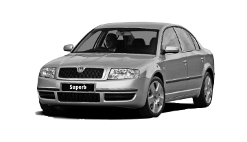

Historie modelu


Novodobý Superb se veřejnosti poprvé ukázal na ženevském autosalonu 2001 coby studie pojmenovaná Montreux, na podzim téhož roku se začal prodávat - samozřejmě už jako Superb.
Designéři z Mladé Boleslavi dnes na první generaci vzpomínají jako na auto, které dodalo značce sebevědomí. A jako na skutečně přelomový vůz. „Pro mě bylo překvapením, že do něčeho takového Škoda šla. Byl to segment, kterého se tehdy nedotýkala. Hotový model jsem viděl v podstatě první den, kdy jsem tehdy nastoupil. A to auto na mě opravdu zapůsobilo, bylo nezvykle velké, pro mě to byl odvážný krok,“ vzpomíná Jiří Hadaščok, dnes koordinátor exteriérového designu.
V letech 1998 a 1999, kdy se Škoda Superb po vzhledové stránce finalizovala, působil v oddělení designu jako praktikant. Auta podle něj tehdy měla plné a poměrně jednoduché tvary, první Superb díky tomu působil až nečekaně mohutně. Stál na prodloužené verzi koncernové platformy, kterou používal i Volkswagen Passat.
„První generace pro mě představuje racionální vstup do nového segmentu. Zákazníci si mohli koupit větší auto, než byli zvyklí, ale vše u něj bylo tak, jak očekávali, jak to znali. První generace jednoduše naplnila představu zákazníků a přinesla jim určitou přidanou hodnotu navíc,“ říká Petr Nevřela, designér, který se ve Škoda Auto specializuje na světlomety. Ty u první generace byly podle něj především střízlivé a praktické, tehdy ještě technika úplně neumožňovala různé designové hrátky. Důkazem toho je i rozdělení hlavního světlometu a směrovky vpředu do dvou dílů.
Důraz škodováci kladli na prostornost a zpracování interiéru. Přestože museli využít koncernové díly. „Používali jsme veškerou koncernovou techniku a některá konkrétní řešení, ta jsme se snažili co nejvíc zabalit do vlastního designu. Ale třeba vrchní část přístrojové desky je převzatá.“
Motory
Pod kapotu je na výběr z benzinových a naftových motorizací se dvěma úrovněmi hybridizace. Benzinový základ je mildhybridní, vyšším stupněm elektrifikace je pak pro Škodu nabíjecí (plug-in) hybrid. Silnější motory nabídnou pohon všech kol.
Škoda Superb

| typ motoru |
roky výroby |
výkon |
| 1,8 T | 2001 - 2008 | 110KW |
| 2,0 | 2001 - 2008 | 85KW |
| 2,8 V6 | 2002 - 2008 | 140KW |
| 2,8 V6 | 2001 - 2008 | 142KW |
| 1,9 TDI | 2002 - 2005 | 74KW |
| 1,9 TDI | 2005 - 2007 | 77KW |
| 1,9 TDI | 2007 - 2008 | 85KW |
| 1,9 TDI | 2001 - 2008 | 96KW |
| 2,0 TDI | 2005 - 2008 | 103KW |
| 2,5 TDI | 2001 - 2003 | 114KW |
| 2,5 TDI | 2003 - 2008 | 120KW |
recenze